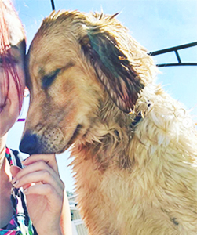

Hi, my name is Kristen Ferguson and I started K’s Pet Grooming NJ to create a laid back and comfort based way for your pets to get cleaned up in the least stressful way possible! I’ve been working with animals for 5 years now. Between Vet Tech training, Bathing Certifications, Grooming Training, and working in Grooming Salons for the last 4 years I have a wide range of experience. Please feel comfortable to call or text with any questions!